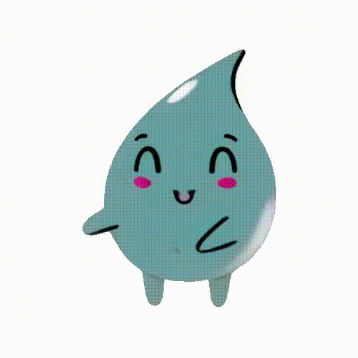

¿Qué medidas se toman en Barcelona con respecto a la sequía??
Respuesta: El Ayuntamiento de Barcelona está desplegando el Plan de recursos hídricos alternativos. Este plan busca sustituir el consumo de agua potable por otros recursos hídricos en usos que no requieren la calidad del agua de boca.
♦♦♦Aqua Quest♦♦♦
Regresar